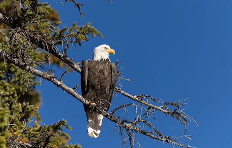
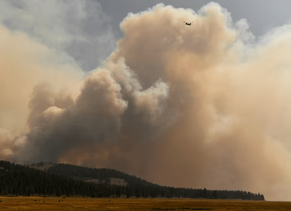
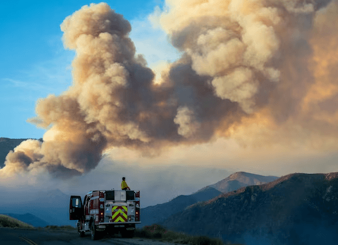
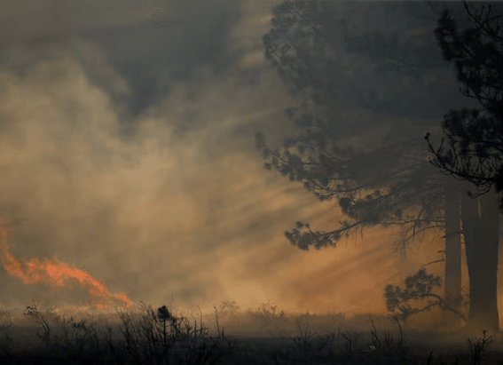

NATIONAL GEOGRAPHIC
What's it like to travel on the longest daily-running train service in the US
TRAVEL
- 
“If you need to update Facebook, do it now,” the conductor announces over the tannoy. The passengers chuckle but dutifully pull out their phones. As we trundle into the snow-capped Sierra Nevada mountains, we’re about to enter another mobile dead zone.
I’m sitting in the observation car on Amtrak’s California Zephyr, a train that trundles cross-country for 2,438 miles, making it the longest daily-running rail service in the US. From its starting point near San Francisco to its final destination in Chicago, this expansive journey slicing through the middle of the US takes 51 hours and 20 minutes more than two full days of riding the rails, assuming you arrive on time, which you likely won’t. In 2022, just 25% of the journeys made by the California Zephyr ran to schedule.
In a country that feels ever more fractured, the observation car on an Amtrak train might be the last great levelling ground. It’s a place where you can quickly form a sense of community with complete strangers a cross between a neighbourhood bar and an Agatha Christie novel. No one rides Amtrak accidentally. Taking a train in the US, especially in the lesser-served part of the country west of the Mississippi River, is rarely the most time- or cost-efficient method of getting from A to B. Everyone is here in this carriage, on this train, right now deliberately.
I’ve made myself comfortable on the upper floor of the double-decker train. A handful of diner-style booths and beige swivel chairs cushioned in generic 1980s blue are positioned beside picture windows that run the length of the walls and curve up the rounded roof. The landscape on the other side of the glass a succession of pine-covered mountain passes, ribbons of blue-green river far below, red-rock outcrops poking out from a thin blanket of snow demands the observation car’s collective attention, and the windows quickly become smudged with fingerprints as we clamber for photos.
Between Sacramento in California and Reno in Nevada, a pair of volunteer guides in red vests from the California State Railroad Museum stand and narrate our journey, which follows the same route as the 1869 transcontinental railroad the first rail route connecting the country from east to west and traverses the 2,150 metre-high Donner Pass, named for the famous 1840s pioneer party whose wagons got snowed in and had to resort to cannibalism.
The scenery is captivating, but so are the characters, and when the narration ends, the passengers’ stories begin. “What brings you here?” I ask again and again, often opening the door to much more than I bargained for. There’s an absence of filter and instant friendliness among many Americans that makes conversation come easy most don’t mind spilling their life story to a stranger. Amid the retirees, commuters and students, there’s a large family of traditionally dressed Amish women in bonnets and demure dresses and men with long beards and braces playing card games on the way home to Pennsylvania Dutch Country after the mother had a medical procedure in California. Two Japanese students who aren’t totally fluent in English only add to the unusual menagerie of travellers.
The next morning, as the sun rises over Utah, I wake up in my roomette, one of Amtrak’s sleeper cabins, which have seats that fold out into small bunks. I’m ready for another day of observation car antics, so I reconvene with the motley crew. A new conductor boarded the train overnight in Salt Lake City and has clearly drunk his morning coffee, calling out over the tannoy as if we’re on safari. “There’s a bald eagle!” he cries, followed shortly by, “See that herd of antelope?”. All of us in the observation car start playing a group game of I spy, letting out a collective gasp when the animals are spotted.
Soon we’re curving along the Colorado River and diving deep into canyons through the Rockies, slowing to a crawl as the sheer walls close in on the tracks. Had the windows been able to open, I could’ve reached out and brushed my fingers along the snowy stones. More than once, I stand up to get a closer look only to duck my head when it feels like an overhead ledge gets too close.
By dusk, we’re passing through Denver and into the Great Plains prairie. I’ve hardly left my observation car seat as other passengers have filtered through and on and off the train over a handful of stops. The conductor is still in a jolly mood. “If anyone has a guitar, bring it to the observation car and let’s have a party,” he announces to the entire train. One of the Amish men whips a harmonica out of his pocket and starts to play. “You know, it’s times like this that make me love this country again,” says the man sitting next to me a proclamation as much to himself as to me. And I think to myself: when was the last time you heard someone say that at the airport?
As it happens, someone on board does have a guitar, and I wonder whether a round of Kumbaya is about to break out. Instead, the observation car is treated to a bit of soulful strumming, topped by, as ever, a layer of conversation that never dies out. Turns out you don’t need a mobile signal to make a connection.
Comments :
- john Very good
- john Very good
Leave a Reply
Your email address will not be published. Required fields are marked*
Related posts:
-
Wildfire smoke is transforming clouds, making rainfall less likely
Over the summer of 2018, the worst wildfire season the western United States had ever seen sent thick plumes of smoke high into the sky. Atmospheric scientist Cynthia Twohy and her colleagues spent weeks flying a giant
View article -
Wildfire smoke linked to higher COVID-19 death rates
Smoke from last year’s wildfires in California, Oregon, and Washington, contributed to a significant increase in COVID-19 cases and deaths in those states, according to a new study.
View article -
How extreme fire weather can cool the planet
Extreme heat often brings extreme wildfires, and this year is no exception, with unprecedented heat waves fueling enormous outbreaks of fires in the western United States and Canada, as well as across the Mediterranean and in Siberia
View article